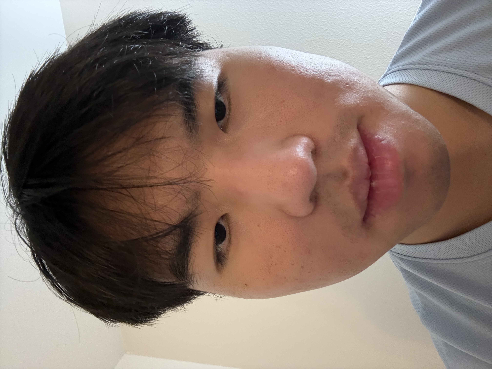
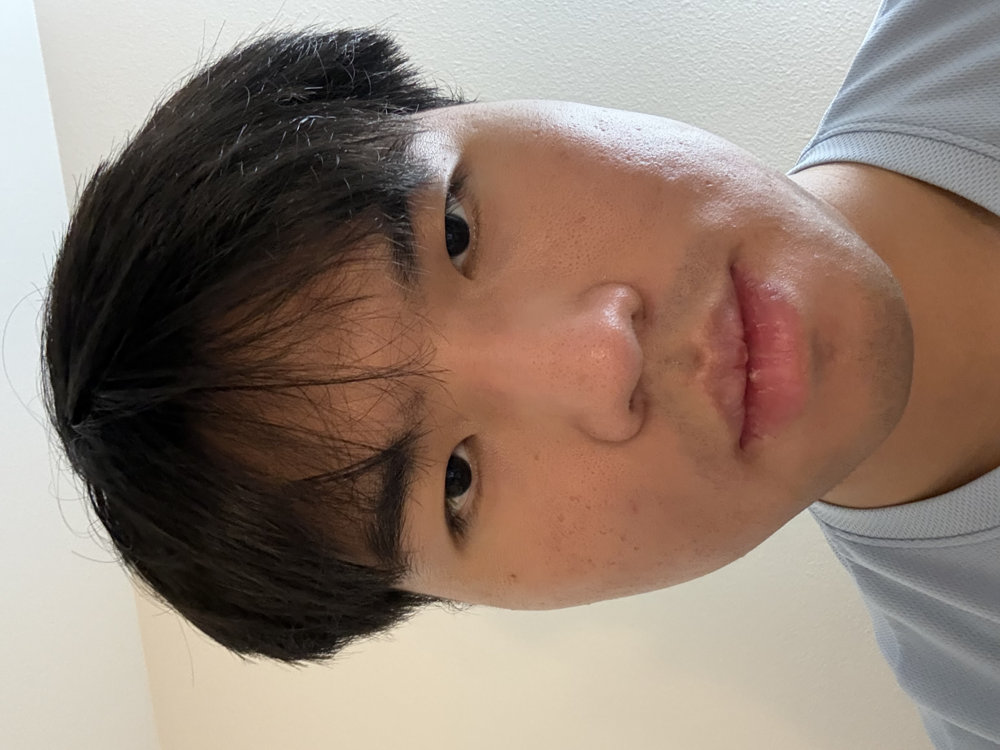
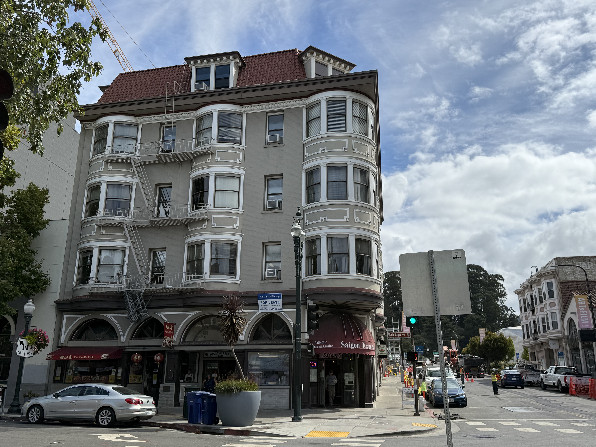
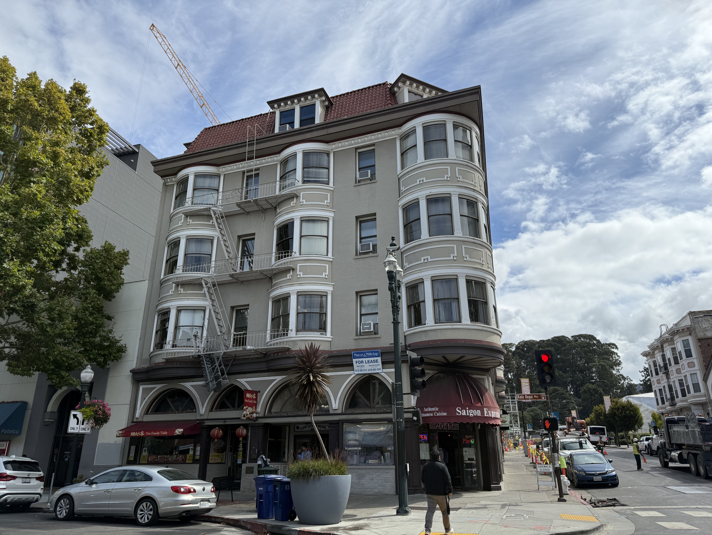
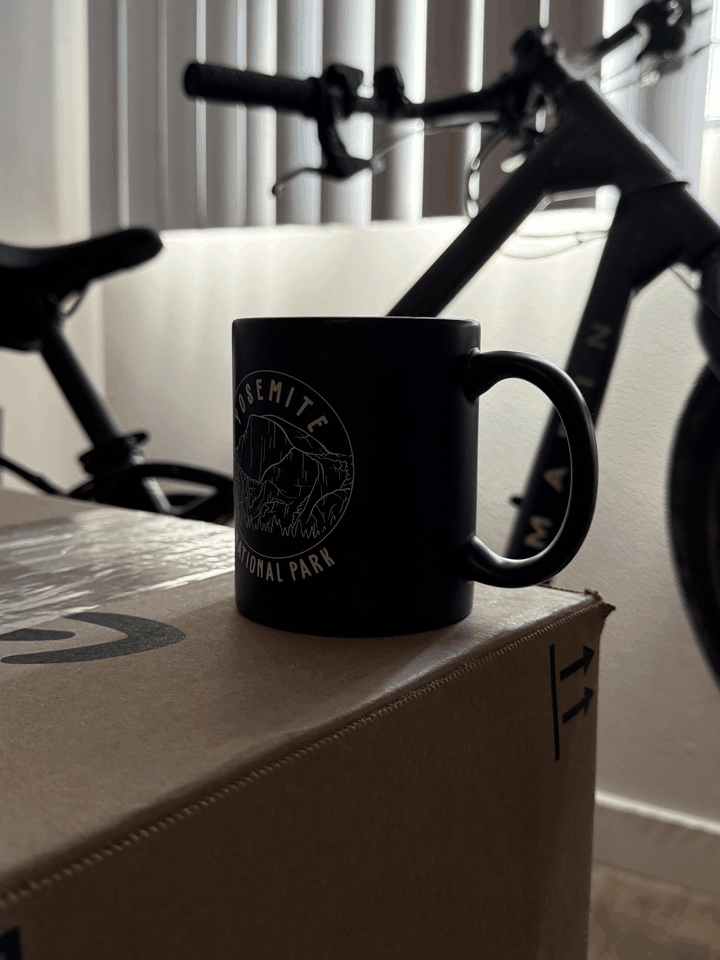

Overview
This project is an introduction to how a camera actually sees the world — how distance, zoom, and the center of projection change the shape of a photograph.
Part 1
Selfie: The Wrong Way vs. The Right Way
Two portraits of the same face, same size in frame: one taken close up, one taken from farther away and zoomed in to match.


Why does this happen?
In the close-up photo, the camera is much closer to my face, so features nearer to the lens, such as my nose, appear larger relative to features farther away. This makes the face look more distorted. When I move the camera farther away, the differences in distance between these features become small relative to the total camera distance, so their proportions look more even and the face appears flatter. Zooming in only makes my face fill the frame again; the change in perspective comes from moving the camera.
Part 2
Architectural Perspective Compression
A building facade photographed two ways: zoomed in from far away and up close with no zoom while keeping the building roughly the same size in frame.


Why does the first image look flattened?
The first image was taken from farther away, so the distances from the camera to the near and far parts of the building are relatively similar. As a result, those parts project to more similar sizes in the image, making the depth of the scene look compressed. In the close-up photo, the relative distance difference is larger, so nearby parts appear bigger. The zoom changes the framing, while the camera position creates the flattened perspective.
Part 3
The Dolly Zoom
A sequence of stills, walking the camera backward while zooming in, keeping the subject a constant size and combined into an animated GIF. Made famous by Hitchcock's Vertigo.
